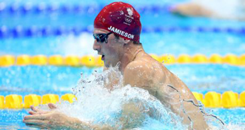

Breaststroke is a swimming style in which the swimmer is on their chest and the torso does not rotate. It is the most popular
recreational style due to the swimmer's head being out of the water a large portion of the time, and that it can be swum comfortably
at slow speeds. In most swimming classes, beginners learn either the breaststroke or the freestyle (front crawl) first. However, at
the competitive level, swimming breaststroke at speed requires comparable endurance and strength to other strokes. Some people refer
to breaststroke as the "frog" stroke, as the arms and legs move somewhat like a frog swimming in the water. The stroke itself is the
slowest of any competitive strokes and is thought to be the oldest of all swimming strokes.

Back